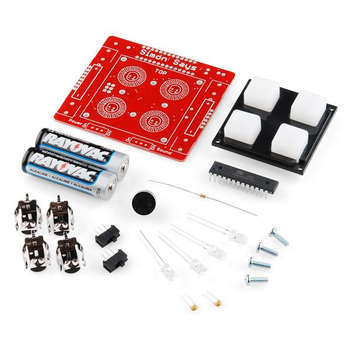
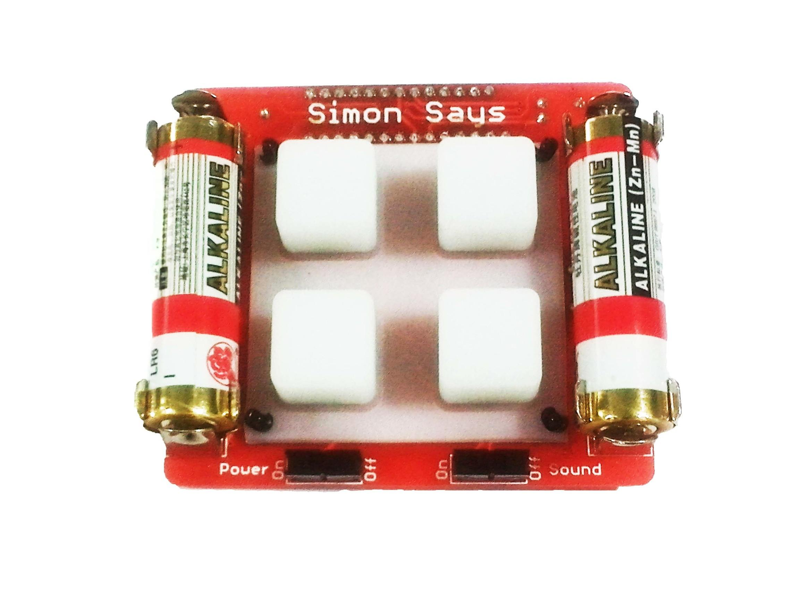

This is the latest version of our popular through-hole Simon Says Kit. We’ve made some changes to the board that should make it easier than ever for the beginner to build! All components are through-hole, making this kit a great place to start when you’re learning to solder. When building this kit, you’ll have a chance to solder a 28-pin microprocessor, LEDs, battery clips and more.
After you have successfully assembled the kit, you will have a greater knowledge of through-hole soldering and the tools, techniques, and terminology required to populate your own PCB prototype. You will have a development platform with 5 outputs (LEDs and buzzer), 5 inputs (buttons), and serial for debugging. And, of course, you’ll have your very own Simon game!
Checkout the assembly instructions - we’re pretty proud of them. The kit even includes batteries! Assembly time varies, but for a true beginner with no soldering experience, the kit can take 20-40 minutes to assemble. A soldering iron and wire cutters are the bare minimum tools required. We scoured the earth and found a really fantastic beginner’s soldering iron for $10, solder for $2, and wire cutters for $2. We also have a Learn to Solder version of the kit which includes all the tools you’ll need!
 
•1x ATmega328 - pre-programmed with Simon firmware
•1x Buzzer
•2x 0.1μF Cap
•1x 10K Resistor
•4x LEDs (blue, yellow, red, green)
•2x Slide Switch
•4x Battery Clips
•2x AA Batteries
•1x Button pad
•1x Bezel
•4x Standoffs and screws
•1x Assembly instructions
http://arduino.cc/en/Guide/HomePage
Copyright (c) 2008-2016 Seeed Development Limited (www.seeedstudio.com / www.seeed.cc)